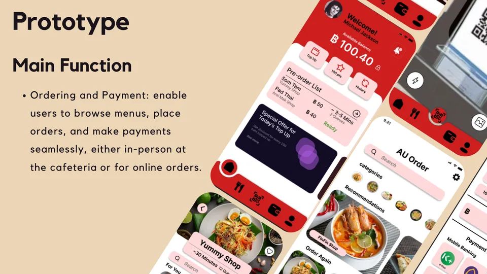

Myo KoZin.
Marketing, measured.
IT graduate in Innovative Marketing Technology from Assumption University. I research audiences, design the experience, and use data and AI tools to find out what actually works.
About
Bangkok, ThailandI sit between the people who build things and the people who sell them.
I studied Information Technology with a concentration in Innovative Marketing Technology, so I speak both languages: user research and campaign plans on one side, prototypes, data and AI models on the other.
I like starting with real users, turning what I learn into something you can see, and then measuring whether it worked. I'm comfortable with numbers, I design my own visuals, and I use AI tools every day while checking what they give me.
I'm looking for an internship in digital marketing, MarTech, content or UX in Bangkok, where I can learn from a team and contribute from the first week.
Selected work
07 case studies
RentSync
A peer-to-peer platform that lets students and freelancers rent gadgets from people who own them, for days instead of buying. I worked on market sizing, personas and validation with 70 people.
Read the case study
Garmin Luna — Every Phase, Every Pace
A three-month digital campaign for Garmin Thailand built around a concept women's smartwatch: persona, content pillars, a 20,000 THB monthly budget and a live Facebook launch.
Read the case studyFinding microplastics with computer vision
Which affordable AI model best spots microplastics under a USB microscope, so schools can run the test cheaply? Presented at the 11th International STEM Education Conference.
Read the case study

At Chris — online food ordering
A neighbourhood Burmese rice shop took orders through LINE messages. We replaced that with one system: a trilingual menu, PromptPay QR payment, live tracking and an owner dashboard with AI sales insights.
Read the case study
AU Wallet
A campus ordering and payment app, prototyped in Figma and redesigned after testing with 14 students: 12 said it solves the cafeteria queue problem.
Read the case studyHotel booking platform plan
A full project plan for a cloud-based reservation system: charter, WBS, schedules, RACI, and feasibility with ROI, NPV and payback.
Read the case studyCPR awareness poster
A hospital poster built around one simple idea: anyone can learn to restart a heart. Concept and design in Photoshop and Illustrator.
Read the case studyToolkit
What I work withMarketing & research
Digital marketing strategy, customer personas, market and competitor research, surveys, user interviews, product positioning
Design & UX
Figma, Canva, Adobe Photoshop, Adobe Illustrator, mobile app design, prototyping, usability testing, basic video editing
Data & AI
Python, machine learning, computer vision, Roboflow, data visualization, Excel, ChatGPT and Claude for research and analysis
Ways of working
Agile/Scrum, GitHub, Google Colab, cross-functional teamwork, presenting to an audience, research writing